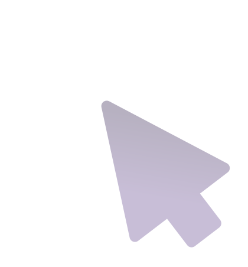
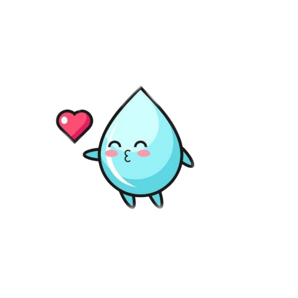
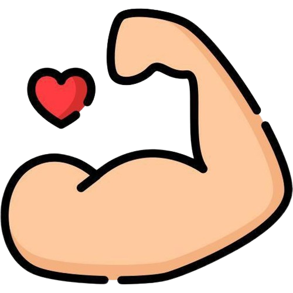

Cositas para ayudarte con tu dieta

En el primer botón, podrás visualizar las comidas permitidas para ti mi amor,
mientras que en el segundo botón tendrás acceso a un verificador de alimentos,
el cual te facilitará la búsqueda para determinar si un alimento es apto para tu consumo amor.
Haz clic en la opción que desees utilizar en este momento...

Tengo un consejo hidratante para ti → 
→
¡Buena suerte con tu dieta, mi amor! 